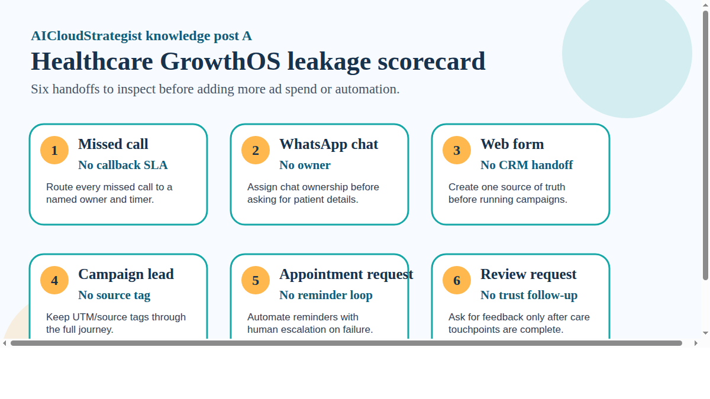

AICloudStrategist daily knowledge post A • Healthcare GrowthOS and inbound enquiry leakage
Healthcare GrowthOS: 6 Places Patient Enquiries Leak Before the Clinic Notices
Most clinics do not lose enquiries at one dramatic point. They leak in small handoffs: missed calls, ownerless chats, untagged forms, weak reminders, and no trust follow-up.

Public knowledge note
Most clinics do not lose enquiries at one dramatic point. They leak in small handoffs: missed calls, ownerless chats, untagged forms, weak reminders, and no trust follow-up.
- Missed call — No callback SLA: Route every missed call to a named owner and timer.
- WhatsApp chat — No owner: Assign chat ownership before asking for patient details.
- Web form — No CRM handoff: Create one source of truth before running campaigns.
- Campaign lead — No source tag: Keep UTM/source tags through the full journey.
- Appointment request — No reminder loop: Automate reminders with human escalation on failure.
- Review request — No trust follow-up: Ask for feedback only after care touchpoints are complete.
Practical takeaway: Use this as a demo diagnostic checklist before adding more ad spend or AI automation.
Proof boundary
Demo operating model. No client results, patient-growth numbers, legal guarantees, or testimonials claimed.
Need this operating layer in your business?
Request a free growth review or contact AICloudStrategist. We avoid fake client proof, unsupported compliance claims and guaranteed outcome claims.